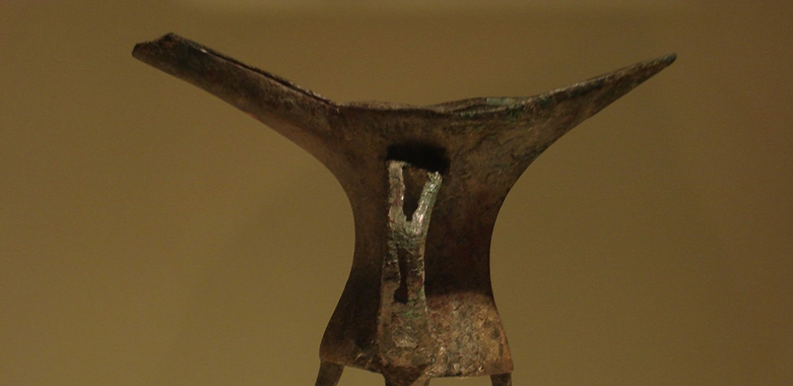

Artifacts

https://en.wikipedia.org/wiki/File:CMOC_Treasures_of_Ancient_China_exhibit_-_bronze_jue.jpg
The Erlitou site is thought to contain the earliest bronze factory discovered in China, as well as two palaces, and residential areas. Many cultural relics were excavated at Erlitou, including bronze tools, jade, pottery, stone, bone, and mussel wares. The most notable artifact excavated was the Jue (displayed in the image above), an ancient wine cup used by nobles and royals in ancient China.